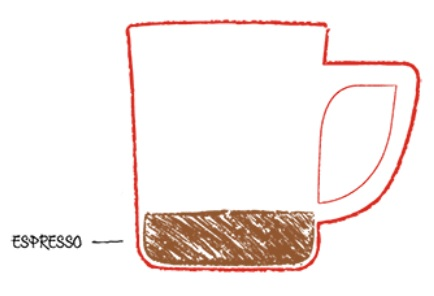
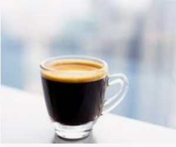
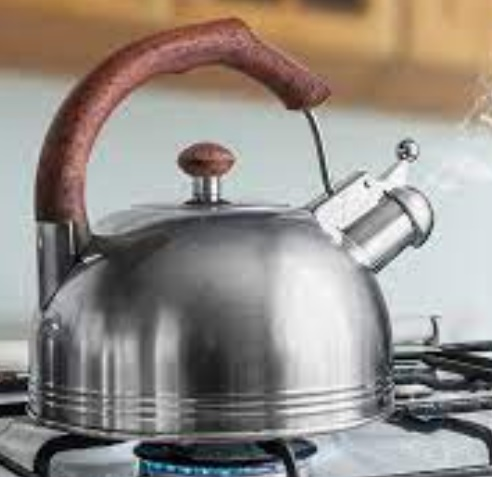
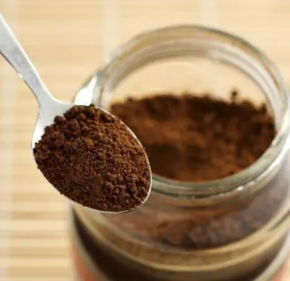
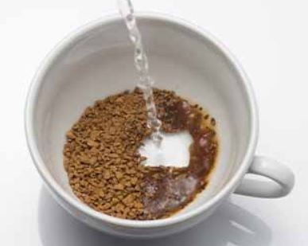
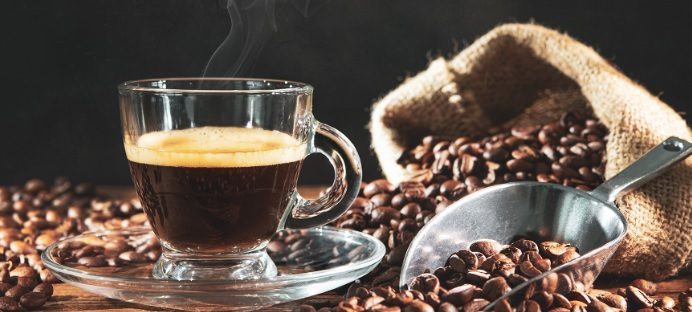

¿Qué es un café espresso?
¿Qué es y en qué consiste un espresso?
El espresso es una forma concentrada de café, se sirve en pequeñas medidas y suele ser la base de muchos otros tipos de bebidas de café, como el cappuccino, latte, americano y macchiato. Pero ¿qué es un espresso? El espresso no es un tipo de grano de café ni un estilo de tueste, un error muy común. Es un proceso de preparación del café que se hace forzando el paso de agua caliente a alta presión a través de granos de café muy finamente molidos. A continuación, se cubre con una crema, una espuma marrón, que añade el intenso y sabroso retrogusto. Un espresso es intenso y atrevido, pero no por ello menos delicioso, y suele servirse en tacitas muy pequeñas.
¿Dónde se originó el café espresso?
Al igual que muchas recetas de café famosas, el espresso se inventó en Italia, hace unos 100 años, y se atribuye a un hombre llamado Luigi Bezzera, de Milán. Fue el primero en utilizar un método de elaboración de café con vapor a presión, con el que se conseguía un café fuerte mucho más rápido. De hecho, el nombre caffé espresso se traduce como «café prensado», en referencia al agua que se empuja a través del café finamente molido a una presión muy alta. En la década de 1940, se perfeccionó el proceso de elaboración del espresso; este café tan famoso y utilizado en el mundo entero era ya una realidad.
¿De qué está hecho un espresso?
El café espresso es una forma concentrada de café que se sirve en medidas. Se compone de dos ingredientes: café 100 % finamente molido y agua caliente. Este método de preparación permite obtener un café intenso, rico y audaz, que constituye la base de muchos otros tipos de cafés, como el cappuccino, el latte, el americano y el macchiato.
¿Qué diferencia hay entre un espresso y un café normal?
El espresso es la base de casi todos los tipos de café. Cuando los baristas preparan el espresso, utilizan agua a gran presión que se abre paso por el café molido compactado, lo que produce un líquido espeso y almibarado, con una preciosa capa de espuma marrón claro en la parte superior, llamada crema. Esa es la diferencia principal: otros tipos de café se basan en un proceso de filtrado más lento, que permite que el agua caliente pase lentamente entre los granos de café. El espresso también depende de una molienda mucho más fina de los granos, mientras que el café normal se elabora perfectamente con granos de molienda media.
¿Cómo preparar un espresso con café soluble en casa?
1
2
-
PASO 1
Calienta el agua a 80 ºC. No hace falta usar el hervidor
-
PASO 2
Pon 2 cucharaditas de café soluble en una taza
-
PASO 3
Añade 30 ml (2 cucharadas) de agua caliente a los gránulos de café
-
PASO 4
Remuévelo bien hasta que todo se disuelva y disfrútalo
3
4
